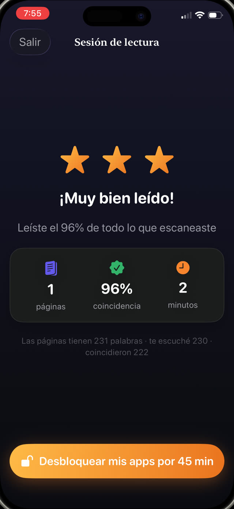

Hay cuatro causas comunes. Necesitan respuestas distintas, y equivocarse en el diagnóstico es la razón por la que tanto estímulo bienintencionado no llega a ningún lado.


1. Es demasiado difícil
La causa más común y la que menos se dice en voz alta, porque admitirla se siente como admitir que uno es tonto. Si leer cuesta tanto esfuerzo que la historia nunca llega, por supuesto que es aburrido: para ese chico no hay historia, solo trabajo.
Señales: evitar específicamente leer en voz alta, seguir con el dedo mucho después de la edad esperada, adivinar palabras por las primeras letras, cansancio a los dos minutos.
Qué ayuda: bajar uno o dos niveles de dificultad, aunque se sienta un retroceso. La fluidez se construye sobre textos que el chico puede manejar casi por completo. Sesiones cortas diarias en voz alta la reconstruyen más rápido que sesiones largas en silencio.
2. No tiene voz en qué lee
Un libro asignado por un adulto es un deber. Un libro elegido por el chico es suyo. La diferencia en disposición es enorme y no cuesta nada regalarla.
Qué ayuda: ampliar qué cuenta. Historietas, novelas gráficas, no ficción sobre una obsesión muy puntual, libros de chistes, guías de videojuegos. La práctica de decodificación es idéntica, y el interés es el único combustible disponible.
3. No hay un momento en que leer sea lo obvio
La lectura rara vez gana una competencia abierta contra una pantalla a las ocho de la noche. No porque el chico prefiera las pantallas en algún sentido profundo, sino porque la pantalla no exige ninguna decisión.
Qué ayuda: un espacio fijo, siempre a la misma hora, lo bastante corto como para que no se pueda discutir. Diez minutos antes de apagar la luz, o justo después de la cena. Proteger el espacio importa más que su duración.
4. Leer no tiene un propósito que puedan sentir
Los adultos leen por placer, pero el placer necesita fluidez para desbloquearse. Antes de ese punto, un chico necesita un motivo que exista hoy, no una promesa sobre ir mejor en el colegio más adelante.
Qué ayuda: una consecuencia visible e inmediata. Diez minutos de lectura desbloquean el juego. Una racha que no se puede romper. Una medalla a los siete días. No es soborno, es un puente, y deja de importar cuando la lectura misma se vuelve gratificante.
Cuándo puede ser más que reticencia
Si un chico invierte letras de forma sistemática bastante después de los siete años, no puede sonorizar con fiabilidad palabras simples desconocidas, tiene dificultades con la rima, o lee bien una palabra en un renglón y no en el siguiente, conviene plantearlo con su maestra y preguntar por una evaluación de dislexia.
La reticencia y la dificultad se ven idénticas desde afuera, y la diferencia importa. Este artículo no reemplaza esa evaluación.
Hacer el propósito inmediato
Guardian Reader apunta de lleno a las causas tres y cuatro. Crea el espacio fijo, porque la lectura tiene que pasar antes de que las apps se abran, y hace el propósito inmediato, porque el tiempo de pantalla llega en el momento en que la lectura termina.
Como la app ajusta el mínimo de aprobación a la edad que elijas, un lector que está costándole no se mide contra uno fluido. Y la meta diaria se puede poner tan baja como una sola página, que para un lector reacio es exactamente donde hay que empezar.
La lectura desbloquea la pantalla.
Gratis · Sin cuentas, sin rastreo
Descargar Guardian Reader para iPhone